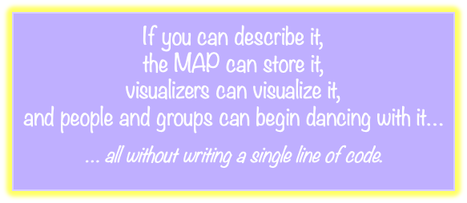

MAP Type System¶
The MAP Type System provides a holonic, self-describing, and extensible foundation for representing knowledge in an agent-centric world. Every type in MAP is a holon — a versioned, queryable, and linkable unit of meaning. Every holon is, in turn, typed — grounded in a rich schema of interrelated descriptors.
This holonic approach means:
- Types can describe types.
- Types can inherit from other types.
- Types can be extended, queried, and versioned just like data.
The MAP Type System enables agents to: - Define their own schemas and vocabularies - Share and evolve types collaboratively - Validate, introspect, and visualize holons at runtime

This document introduces the architecture of the MAP Type System, structured into three foundational layers and supported by unified schema import, key rules, and introspection semantics.
1. Introduction: What Is the MAP Type System?¶
The MAP Type System is:
- 🧠 Self-describing — Every type is a holon, and every holon can describe itself.
- 🧱 Compositional — Holons can be connected through typed relationships to build meaningful graphs.
- 🔍 Introspectable — Any holon can answer:
→ What kind of Holon am I?
→ What properties do I have?
→ What relationships do I participate in?
- 🌱 Extensible — Agents can define new types without altering the core codebase.
MAP’s Ontology-as-Data Meta-Modeling Approach¶
The Memetic Activation Platform (MAP) models its entire ontology as data—not as code, not as syntax-bound models, but as a fully introspectable, declarative system of holons. Every type, property, relationship, and rule in the MAP ecosystem is represented as a holon—a data entity described by other data entities—creating a self-describing, semantically rigorous system.
What It Is¶
- Ontology-as-data: All type system elements (e.g.
BookType,MetaEnumValueType,MapStringValueType) are modeled as structured data instances. These are holons described byTypeDescriptorholons, forming a fully reflective type graph. - Declarative architecture: Relationships, constraints, and inheritance are declared explicitly, rather than implied by code or assumed by syntax. Examples include
Extends,InstanceProperties, andUsesKeyRule. - Syntax-independent: The data model is not coupled to any specific concrete syntax like OWL, LinkML, JSON Schema, or Ecore. This allows MAP to remain neutral and flexible.
- Portable and generative: Because the ontology is described entirely in data, it can be programmatically transformed into any number of target modeling formats, including OWL (RDF), Ecore, LinkML, JSON Schema, or domain-specific APIs.
Why This Matters¶
- Interoperability: By remaining syntax-agnostic, MAP avoids vendor lock-in and promotes compatibility across tooling ecosystems.
- Transparency and introspection: Every element of the type system is visible and inspectable—users and systems can query, reason about, and validate types and their relationships using the same underlying structures.
- Extensibility: New type kinds, validation rules, or relationship semantics can be introduced declaratively without requiring changes to core code or parsers.
- Automation: The data-native structure supports auto-generation of syntax-bound schemas, documentation, forms, validators, and converters across ecosystems.
- Evolvability: Standards, formats, and tools evolve over time. By anchoring the MAP ontology in a neutral, declarative core, it remains resilient to external changes. New representations can be generated as needed, without requiring redefinition of the underlying semantics.
A Foundation for Federated Semantics¶
This architecture positions MAP not just as a platform, but as a semantic engine capable of supporting fluid translation between formal modeling environments. It is particularly well-suited to decentralized systems, federated knowledge graphs, and commons-oriented technology—where semantic clarity, flexibility, and sovereignty are paramount.
2. Organizing the MAP Type System¶
At the heart of the MAP architecture is a self-describing type system built entirely from data. The foundational building block of this system is the TypeDescriptor—a holon that defines the structure, semantics, and constraints of a particular type within MAP. These TypeDescriptors describe not only data instances, but also other types, enabling a fully introspectable and evolvable modeling framework.
A relatively small number of these type descriptors are "built-in" to the MAP. These provide the foundation from which an open-ended set of types can be derived.
TypeDescriptors are grouped into schemas, which are cohesive collections of related type definitions. Each schema defines its own conceptual namespace and boundary of meaning. In turn, every schema is stewarded within a single HolonSpace, anchoring it in a governance and trust context. While a schema belongs to exactly one HolonSpace, it may be referenced by types or instances across other spaces, supporting reuse and interoperability without centralization.
This layered organization follows a clear pattern:
- TypeDescriptors define types.
- Schemas group TypeDescriptors.
- HolonSpaces steward schemas.
This structure allows types to evolve in well-bounded contexts while participating in broader federated semantics.
Type Kind: A Semantic Organizing Principle¶
Every TypeDescriptor in MAP declares a type kind—a high-level classification that serves dual purposes:
1. Organizational: They help group and reason about types across schemas. All Relationship types, for instance, share common structural expectations and validation behavior.
2. Semantic: They convey the ontological category of the type—what kind of "thing" it is in the MAP worldview.
In this way, Type Kind functions as a semantic meta-tag that informs how a type is expected to behave, how it is validated, and how it can be composed within other types. While it doesn't encode structure directly (like DescribedBy or Extends), type_kind plays a central role in how types are declared, introspected, and extended across the system.
$ 📚 Complete List of Type Kinds¶
The current set of supported Type Kinds is listed in the following table. This set will continue to evolve as the MAP matures. Adding Type Kinds (e.g., adding support for a Value(Video) Type Kind) requires a new MAP release. Adding TypeDescriptors does not.
| Type Kind | Category | Description |
|---|---|---|
Holon |
Structural | Describes a type that classifies data-bearing holons |
Property |
Structural | Describes a scalar property of a holon |
Relationship |
Structural | Describes a directed link between holons |
EnumVariant |
Structural | Describes a variant in a defined enum |
Collection |
Structural | Describes a named group or set of holons |
Dance |
Behavioral | Describes an interactive protocol or workflow |
Value(String) |
Scalar Value | A scalar value based on a string |
Value(Integer) |
Scalar Value | A scalar value based on an integer |
Value(Boolean) |
Scalar Value | A scalar value based on a boolean |
Value(Enum) |
Scalar Value | A scalar value selected from a known enumeration |
Value(Bytes) |
Scalar Value | A binary value serialized as base64 |
ValueArray(String) |
Scalar Array | An array of strings |
ValueArray(Integer) |
Scalar Array | An array of integers |
ValueArray(Boolean) |
Scalar Array | An array of booleans |
ValueArray(Enum) |
Scalar Array | An array of enum values |
ValueArray(Bytes) |
Scalar Array | An array of binary values |
3. Four-Level Model¶
To support full self-description, schema extensibility, and type safety, MAP organizes its entire type system using a four-level model. This layered structure spans from abstract meta-concepts to concrete, instantiable types and data.

🔗 Compositional Inheritance via Extends
MAP embraces compositional inheritance as its primary structuring mechanism. Rather than relying on rigid class hierarchies, MAP types declare structure by extending other types — combining properties, relationships, and semantic expectations through composition.
The `Extends` relationship is used throughout the type system to:
- Declare that a type fulfills the obligations of a more general type
- Inherit shared properties and relationship definitions
- Align a descriptor with the structural pattern of its kind
This enables:
- Meta-types to declare required features (Level 1)
- Abstract types to specialize those features per TypeKind (Level 2)
- Concrete types to fulfill both (Level 3)
> Compositional inheritance keeps MAP types modular, transparent, and incrementally extensible — without locking them into brittle class hierarchies.
🧱 Level 1: Meta-Types¶
Meta-types define the structural obligations for categories of types. Each meta-type declares:
- Required InstanceProperties and InstanceRelationships (and, soon, Validations and Dances)
- The type_kind it governs
Examples:
- MetaPropertyType defines the structure of all PropertyType descriptors
- MetaRelationshipType defines shared expectations for relationship descriptors
- MetaTypeDescriptor defines common expectations for all descriptor types
These are the most abstract holons. They describe the kinds of type descriptors MAP supports.
Top-Level Meta-types themselves extend nothing — their obligations are fulfilled for them, not by them. Meta-Types can have sub-meta types that Extend them (e.g., MetaInverseRelationship Extends MetaRelationship).
🧩 Level 2: Abstract Type Descriptors¶
Abstract type descriptors Extend meta-types and anchor relationships for a type kind.
Examples:
- PropertyType extends MetaPropertyType
- HolonType extends MetaHolonType
- EnumValueType extends MetaEnumValueType
These abstract types are not instantiated directly. They serve as category-specific templates for concrete descriptors and provide end-points for core relationships.
📦 Level 3: Concrete TypeDescriptors¶
Concrete TypeDescriptor holons define actual, instantiable MAP types. These are the types agents use to define schemas and classify holons. Concrete type descriptors Extend (and fulfill the obligations of) BOTH TypeDescriptor AND the Abstract Type specific to their TypeKind
Each concrete descriptor:
- Extends both an Abstract Type and TypeDescriptor
- Is a holon that participates in schemas
- Carries metadata (type_name, description, etc.)
- Declares structure via InstanceProperties and InstanceRelationships
Examples:
- BookType extends TypeDescriptor and HolonType
- MapStringValueType extends TypeDescriptor and StringValueType
- HAS_AUTHOR extends TypeDescriptor and DeclaredRelationshipType
Every concrete type in MAP is described by a single, self-contained
TypeDescriptor.
🔁 Level 4: Instances of Types¶
These are the actual holons that populate MAP Spaces. They:
- Are typed by one of the concrete type descriptors (via DescribedBy)
- Include values for properties and relationships specified by their type
- May be keyed or keyless, depending on the UsesKeyRule of their type
Examples:
- "Future Primal" is an instance of BookType
- "title" is an instance of PropertyName
- "LibrarySchema" is an instance of SchemaName
Holons in this layer are the data-level objects that conform to a schema.
🧠 TypeDescriptor: The Keystone Type¶
The TypeDescriptor holon plays a special dual role in this hierarchy:
- It is a concrete type descriptor (Level 3)
- It is the type used to describe all other type descriptors, including itself (Level 4)
- It extends both
MetaTypeDescriptorandHolonType, fulfilling the obligations of both
This elegant recursion prevents infinite regress and anchors MAP’s fully self-describing architecture.
🧩 Abstract Types as Anchors¶
In MAP, every relationship type (such as DescribedBy, InstanceProperties, or ValueType) must declare a SourceType and a TargetType. These define which types of holons a relationship is valid between.
To support reusable relationships across many schemas and domains, MAP anchors relationship types to abstract type descriptors. For example:
- The DescribedBy relationship has HolonType (abstract) as its TargetType
- The ValueType relationship has PropertyType (abstract) as its SourceType
While these abstract types are not instantiable, they are valid, referenceable holons in their own right—each described by a TypeDescriptor. This means they can serve as targets in relationships, enabling relationship types to be defined at the abstract level and reused across all concrete types that extend them.
🔍 In practice: when a concrete type descriptor (like
BookType) declares a relationship such asHAS_AUTHOR, the validation logic walks theExtendschain to ensure that the concrete type conforms to theSourceTypeandTargetTypeexpectations anchored in the abstract layer.
This leads to a clean separation: - Core relationships are defined once and anchored to abstract types. - Concrete descriptors, whether core or domain-specific, extend those abstract types and automatically participate in those relationships.
Validation Behavior¶
The use of abstract types as anchors supports a flexible but robust validation model:
- Holon instances must be DescribedBy a concrete type descriptor.
- Relationship instances (e.g., SmartLinks) are validated by:
1. Looking up the SourceType and TargetType of the relationship's descriptor
2. Ensuring the instance's actual types extend (or are equal to) those expected types
This allows core relationships to be broadly defined and applied without coupling them to specific schemas or concrete descriptors.
Domain Extensions¶
Domain-specific types (e.g., BookType, FilmType) are:
- DescribedBy → TypeDescriptor
- Extend → their TypeKind's abstract template (e.g., HolonType)
These extension types never extend a concrete core type like
HolonType; instead, they instantiate their own concrete descriptors aligned with the abstract templates.
This means that application developers never need to deal with meta-types or abstract scaffolding directly—they simply define concrete types that extend templates and conform to a known pattern.
📌 Design Principles Recap¶
- Each Type Kind has a single (top-level) Meta Type
- Meta Types declare a Type Kind’s obligations via instance properties and instance relationships.
- Top-level Meta Types do not
Extendanything — their obligations are fulfilled for them, not by them. - Meta Types may have sub–meta types that
Extendthem (e.g.,MetaInverseRelationshipExtendsMetaRelationship). - Abstract type descriptors
ExtendMeta Types and anchor core relationship types for a Type Kind. - Each MAP type is
DescribedBya single concrete Type Descriptor. TypeDescriptordeclares the instance properties and instance relationships shared by all type descriptors (including itself).TypeDescriptoris a concrete Type Descriptor thatExtendsbothMetaTypeDescriptorand the abstractHolonType. It acts as both an abstract and a concrete type, preventing infinite regress.- Concrete Type Descriptors
Extendboth the generalTypeDescriptorand the Abstract Type for their Type Kind, fulfilling both.
This 4-level model ensures that types, schemas, and even schema-of-schemas are composable, inspectable, and extensible — enabling MAP to support open-ended, agent-defined semantics.
🧭 MAP Type System Design: Abstract Types as Anchors¶
This document formalizes the design principle that abstract types serve as anchors for relationship definitions within the MAP type system. This approach preserves both the structural integrity of the type system and the flexibility needed for large-scale domain modeling.
✅ Starting Premises¶
| Concept | Clarification |
|---|---|
| Abstract types | Are real holons with referenceable identity. They are TypeDescriptor instances with is_abstract_type = true. They are not instantiable (i.e., no holon may declare DescribedBy → [abstract type]). |
| Concrete types | Are also TypeDescriptors, but with is_abstract_type = false. They can be used in DescribedBy to describe holons. |
| Relationship types | Are concrete DeclaredRelationshipType holons that declare their expected SourceType and TargetType. |
| SmartLink validation | Ensures that the holons involved in a SmartLink conform to the type constraints of the relationship type. This requires comparing the DescribedBy of the source/target holons to the relationship type’s SourceType and TargetType. |
🧩 Design Principle: Abstract Types as Anchors¶
📐 Core Concept¶
Abstract types (e.g.,
HolonTypeTemplate,PropertyType,ValueType) are used as theSourceTypeandTargetTypein the declaration of relationship types.Validation is based not on strict equality, but on type conformance:
A holon is valid as the source or target of a SmartLink if itsDescribedByextends the relationship’sSourceTypeorTargetType.
✅ SmartLink Validation Rule¶
When validating a SmartLink instance:
- Let
Rbe theDeclaredRelationshipTypedescribing the link - Let
Sbe the source holon - Let
Tbe the target holon - Then the SmartLink is valid if:
S.DescribedByExtendsR.SourceTypeT.DescribedByExtendsR.TargetType
This preserves the non-instantiability of abstract types while still allowing them to define broad, reusable relationship categories.
🧠 Why This Matters¶
- Abstract types define type-kind-specific obligations via their
InstancePropertiesandInstanceRelationships. - They act as anchors for relationships such as:
(PropertyType)-[ValueType]->(ValueType)(HolonType)-[InstanceProperties]->(PropertyType)(RelationshipType)-[SourceType]->(HolonType)- Domain-specific concrete types (e.g.,
Book.HolonType) extend these abstract types and inherit their structural expectations.
🔗 Example: Author Relationship¶
Relationship Definition¶
{
"key": "(Holon)-[AuthorOf]->(Holon)",
"type": "#TypeDescriptor",
"properties": {
"type_name": "AuthorOf",
"type_kind": "Relationship",
"is_abstract_type": false
},
"relationships": [
{ "name": "Extends", "target": "#DeclaredRelationshipType" },
{ "name": "SourceType", "target": "#Person.HolonTypeTemplate" },
{ "name": "TargetType", "target": "#CreativeWork.HolonTypeTemplate" }
]
}
Valid SmartLink¶
{
"key": "person123-authorOf-book456",
"type": "#AuthorOf",
"source": "#person123",
"target": "#book456"
}
Where:
person123.DescribedBy → Person.HolonType-
Person.HolonType Extends → Person.HolonTypeTemplate -
book456.DescribedBy → Book.HolonType Book.HolonType Extends → CreativeWork.HolonTypeTemplate
✅ The validation passes: the SmartLink conforms because both source and target types extend the expected abstract anchors.
✅ Summary¶
This approach provides: - A unified, extensible model of type descriptors - Support for validation against abstract categories - Clean modeling of relationship expectations without sacrificing type safety - A clear separation between instantiable and non-instantiable types
By anchoring relationships in abstract types and validating against the extension hierarchy, MAP maintains both strict type safety and maximal reuse of schema structures.
Several of the type_kind variants — such as Value(String), Value(Boolean), or ValueArray(Enum) — correspond to scalar value types. These are backed by a fixed set of Base Types that define how values are represented, stored, and validated across environments. Let’s look next at the Base Types and Base Values that support these value type kinds.
Base Types and Base Values¶
BaseTypes are the foundational, portable types in the MAP system. A Base Type determines how a given value is represented across programming environments — such as Rust on the backend and TypeScript or JSON on the client. The Base Types layer includes scalar types (e.g., MapInteger, MapString) and compound types (e.g., MapBytes). The set of Base Types is fixed for any given version of the MAP. Changes or additions to any of these types requires a recompile of the MAP code and an evolution of the persistent data stored using a prior version of the MAP.
✅ Principle: Preserve Type Identity Across Platforms
* The Base Type name should be treated as portable name, used consistently across environments, and interpretable as such by the MAP type system.
* In Rust, we get this via pub struct MapString(pub String) — which gives us a unique type identity at the compiler level.
* In TypeScript, and even JSON, we can do similar things — not with strong typing, but through type aliases, tagging, or enforced schema constraints.
Current Base Types with Portable Name Bindings¶
The following table shows each MAP Base Type alongside its language-specific bindings and its portable JSON representation.
| Base Type | Rust Binding | TypeScript Binding | JSON Binding (Tagged Format) |
|---|---|---|---|
MapString |
pub struct MapString(pub String) |
export type MapString = string; |
{ "type": "MapString", "value": "..." } |
MapBoolean |
pub struct MapBoolean(pub bool) |
export type MapBoolean = boolean; |
{ "type": "MapBoolean", "value": true } |
MapInteger |
pub struct MapInteger(pub i64) |
export type MapInteger = number; |
{ "type": "MapInteger", "value": 42 } |
MapEnumValue |
pub struct MapEnumValue(pub String) |
export type MapEnumValue = string; |
{ "type": "MapEnumValue", "value": "DRAFT" } |
MapBytes |
pub struct MapBytes(pub Vec<u8>) |
export type MapBytes = string; // base64 |
{ "type": "MapBytes", "value": "aGVsbG8=" } |
Base Values¶
MAP represents actual runtime values using the BaseValue enum. This enum wraps each of the base types, enabling them to be used uniformly in property maps, serialized holons, and validation contexts.
pub enum BaseValue {
StringValue(MapString),
BooleanValue(MapBoolean),
IntegerValue(MapInteger),
EnumValue(MapEnumValue),
BytesValue(MapBytes),
}
Each variant corresponds to a specific MAP Base Type. This allows property values to be stored and inspected in a type-safe and introspectable way.
Only BaseValue variants may be used as PropertyValues within a holon's PropertyMap:
pub type PropertyValue = BaseValue;
pub type PropertyMap = BTreeMap<PropertyName, Option<PropertyValue>>;
By wrapping all scalar values in a unified enum, MAP ensures that holon properties are portable, self-describing, and easy to serialize and deserialize across environments.
Notes¶
-
Rust bindings use the newtype pattern (e.g.
pub struct MapString(pub String)) to distinguish each base type with a unique identity while still leveraging native Rust primitives. This allows custom trait implementations, typed serialization, and compile-time safety. -
All types derive
Clone,PartialEq, and other basic traits, ensuring they are usable in Holochain entry types, maps, and standard logic. -
Display implementations are provided for all base types and for
BaseValue, with formatting that is human-readable and variant-specific. This is especially helpful for debugging, logging, or visualization. -
BaseValueacts as the unified runtime representation of scalar values. Its variant names are aligned with the base type wrappers (e.g.,StringValue(MapString)), and it includes: - A method
into_bytes()for deterministic binary encoding - A
Displayimplementation -
A
From<&BaseValue> for Stringconversion (viaInto<String>) -
TypeScript bindings are currently defined as simple aliases (e.g.,
type MapString = string) for interoperability with JSON and browser-based UIs. This preserves the MAP naming scheme in typed code. -
JSON bindings assume a tagged format for clarity and round-tripping, such as:
{ "type": "StringValue", "value": "Hello" }
-
ValueTypedefines the kind of scalar value a property can hold, and is used within type descriptors to constrain values semantically (e.g., enforce that a field is aString,Integer, etc.). -
The previously defined
BaseTypeenum has been removed. Its responsibilities are now handled more cleanly by: TypeKind— for classifying descriptors at the schema level (e.g.,Property,Value,Relationship)ValueType— for describing scalar semantics in descriptorsBaseValue— for representing actual runtime values
OLDER STUFF -- Ignore everything that follows¶
MAP distinguishes types by their role in the type system. Each layer builds on the one below it:
| Layer | Role | Example Types |
|---|---|---|
| Meta Types | Describe types themselves | MetaPropertyType, MetaHolonType |
| Core Types | Used by MAP system logic and behavior | PropertyType, SchemaName |
| Extension Types | Defined by agents to model domains | BookType, LibrarySchema |
- Meta Types form the introspective backbone of MAP — they define how all other types are structured and understood.
- Core Types provide the foundational categories and semantic roles that MAP depends on to validate, model, and interpret holons.
- Extension Types let agents build on the core by defining their own reusable, introspectable structures — without any need to modify system logic.
Each type in MAP is a holon, and every holon is typed by another holon — its TypeDescriptor — via the DescribedBy relationship. That descriptor defines the holon’s properties, relationships, and structural expectations. This self-describing pattern ensures that every holon carries with it enough semantic metadata to be interpreted, validated, and extended — without relying on external schemas.
Together, these layers support a fully self-aware, agent-defined ecosystem of meaning.
3. Meta Types: Holons That Describe Types¶
Every holon in MAP is DescribedBy a TypeDescriptor. That descriptor serves two essential roles:
- It classifies the holon as a specific type (e.g.,
BookHolonType,SchemaHolonType) - It describes the structure that instances of that type must or may include — such as properties, relationships, and (eventually) dances
But each TypeDescriptor is itself a holon. For example, BookHolonType and SchemaHolonType are both type descriptors — and also holons that can be queried, versioned, and linked.
So what describes a type descriptor?
The types that describe other types are known as meta-types.
3.1 MAP Meta-Schema¶
MetaHolonType,MetaTypeDescriptor,MetaSchemaTypeDescribedBy,Extends,InstanceProperties- 📊 Diagram: Meta-Schema Graph
3.1.1 TypeDescriptor Anatomy and Inheritance¶
- Holon structure:
type,properties,relationships - Semantic role of
Extends - Reflexive closure of the type system
3.2 MAP Meta-Value Schema¶
MetaValueType,MetaStringValueType,MetaEnumValueType, etc.- 📊 Diagram: Meta-Value Schema
3.3 MAP KeyRule Schema¶
KeyRuleTypeand its subtypes:Format.KeyRuleType,None.KeyRuleType,Relationship.KeyRuleType
- 📊 Diagram: KeyRule Schema
3.3.1 Keyed vs. Keyless Holon Types¶
- Structural rules and constraints
- Key derivation formats and
UsesKeyRule - Bootstrapping with materialized keys
3.4 Semantic vs Structural Inheritance in the MAP Type System¶
The MAP Extends relationship enables a flexible form of type composition and lineage. But the meaning and effect of Extends depends on whether the type being extended is abstract or concrete.
This section distinguishes semantic vs structural inheritance, and clarifies how Extends behaves in each case.
🔹 Semantic Inheritance (Extending Abstract Types)¶
Abstract types in MAP define expectations, not structure. They play a role similar to Interfaces in Java and Traits in Rust.
- They specify what kinds of properties and relationships their concrete subtypes must declare.
- But, abstract types are not instantiated; they do not automatically contribute structural content to the types that extend them.
- In MAP, the first instantiable subtype in the Extends chain must explicitly declare the union of all InstanceProperties and InstanceRelationships expected by its abstract ancestors. This means its instances that it describes must populate values for those properties and relationships.
✅ Example¶
MetaTypeDescriptor (abstract) with InstanceProperties: TypeName, Description, etc.
↑ Extends
MetaHolonType (abstract) with InstanceRelationships: DescribedBy and OwnedBy
↑ Extends
TypeDescriptor (concrete)
↑ Describe
BookHolonType
Likewise, BookType — a concrete extension of HolonType — fulfills the expectations declared by HolonType.
- TypeDescriptor must declare its own InstanceProperties and InstanceRelationships that are the union of those declared by all the abstract types up its Extends chain, because those expectations come from its ancestors.
This pattern supports:
- Schema validation rules (e.g., "all MetaHolonType subtypes must declare InstanceRelationships")
- Introspection tools that identify “What kind of thing is this descriptor?”
🧠 Think of semantic inheritance as interface or trait conformance.
🔹 Structural Inheritance (Extending Concrete Types)¶
Concrete types in MAP define structure — real properties and relationships that apply to all instances of the type.
When a concrete type A extends another concrete type B:
- A new holon instance is created for each — one for A, one for B.
- The holon instance of A populates the InstanceProperties and InstanceRelationships declared by A.
- The holon instance of B populates the structure declared by B.
Together, these form a compositional chain of holons, and the effective structure of a holon is the combined result of traversing the Extends chain.
✅ Example¶
Consider a library containing lots of different kinds of items -- magazines, tools, books, CD's, DVD's, etc. There are some characteristics shared by all of these items and additional charactertistics that are specific to the kind of element.
LibraryItemType (concrete)
↑
BookType (concrete)
- An instance of
BookType: - Is its own holon
- Declares and populates properties like
author,publisher,isbn - It also
Extendsan instance ofLibraryItemType, which: - Is a separate holon
- Declares and populates properties like
title,language,identifier
The full shape of the book holon is realized by composing these layered instances. Each contributes to the structure through its declared type.
🧠 Think of structural inheritance in MAP as compositional layering — not property flattening.
✅ Summary Table¶
| Feature | Abstract Type | Concrete Type |
|---|---|---|
| Declares expectations | ✅ Yes | ❌ No |
| Declares structure | ❌ No | ✅ Yes |
| Must be re-declared | ✅ (by subtypes) | ❌ (structure accumulates) |
| Used for validation rules | ✅ Yes | ✅ Yes |
| Used for type conformance | ✅ Yes | ✅ Yes |
| Affects instance shape | ❌ No | ✅ Yes |
| Produces a holon instance | ❌ No | ✅ Yes |
🧠 Design Principle¶
In MAP, inheritance is explicit and introspectable. - Abstract types guide what must be declared. - Concrete types contribute actual structure. - Each concrete type produces its own holon instance. - The effective holon shape is the result of traversing the Extends chain.
This makes the MAP type system composable, schema-validatable, and fully self-describing — with no hidden inheritance or magical behavior.
4. Core Types: Semantic Foundations of MAP¶
PropertyType,RelationshipType,EnumVariantTypePropertyName,RelationshipName,SchemaName- Core enum types (e.g.
DeletionSemantic) - Role in validation, schema definition, and system behavior
5. Extension Types: Agent-Defined Semantics¶
- Instances of core types
- Examples:
BookType,"HAS_AUTHOR","LibrarySchema" - Dual role: type + data
- Cross-schema interoperability and reuse
6. Base Types: Language-Portable Value Kinds¶
MapString,MapBoolean,MapInteger, etc.BaseValueenum- Rust, TypeScript, JSON bindings
- Tagged JSON format and display conventions
- Open design questions
7. Self-Describing Holons¶
Transition section: from types to instances
- Introspection via
DescribedBy,InstanceProperties, etc. - Aggregating inherited structure through
Extends - How any holon reveals:
- What kind of thing it is
- What properties it has
- What relationships it participates in
- (Future) what dances it supports
8. Authoring and Importing Types¶
- JSON structure:
key,type,properties,relationships $refand embedding- Key rules and validation
- Authoring conventions and import-time enforcement